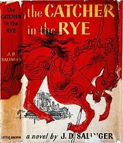

The Catcher in the Rye
Author:THE CATCHER IN THE RYE by J.D. Salinger
Description: The novel details two days in the life of 16-year-old Holden Caulfield after he has been expelled from prep school. Confused and disillusioned, Holden searches for truth and rails against the “phoniness” of the adult world
Download PDF